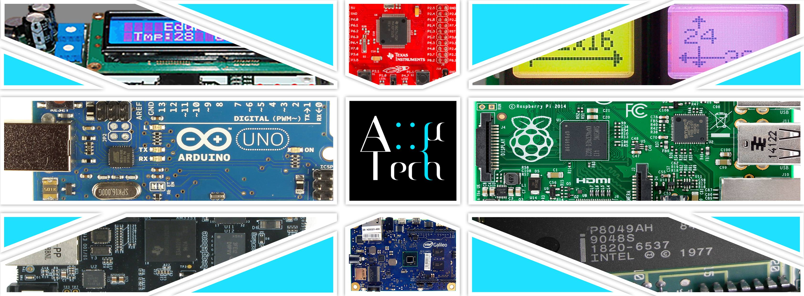

Full Stack developer / Telecom. Engineer
Estudiante de Grado en Ingeniería en Sonido e Imagen en Telecomunicaciones, a falta de realizar el TFG, en la Universidad de Alicante, en la cual he fundado junto a mis compañeros la asociación AMICROTECH, fundamentada en los pilares de la divulgación y la investigación científico-tecnológica.
Apasionado de la programación, a la cual me dedico profesionalmente.
GitHub LinkedIn 